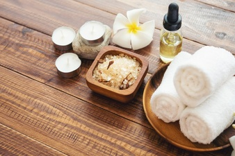
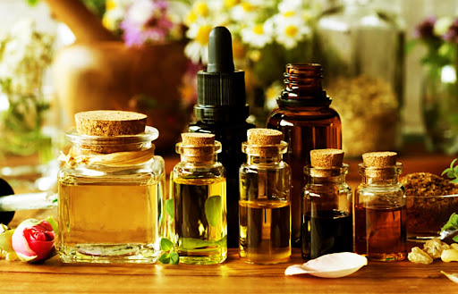

En masajes Sempiterno aplicamos nuestro conocimiento en terapias manuales para ofrecer una experiencia adaptada a las necesidades de nuestros clientes.
Trabajamos todos los grupos musculares del cuerpo desde la cabeza a los pies, así como ayudamos a equilibrar el organismo para tratar o evitar muchas
patologías y molestias producidas en nuestras vidas.
Nuestro objetivo y compromiso es establecer un bienestar pleno a nuestros clientes por medio del quiromasaje y la reflexología podal.
En nuestros tratamientos utilizamos aceites esenciales orgánicos de hierbas y plantas con cualidades curativas para las mezclas de aceites,
cremas y aromaterapia de las sesiones; un ambiente calmado y sosegado, donde la relajación es una parte esencial.
NUESTROS TRATAMIENTOS
 Masaje craneal, cabeza, cuello
Masaje craneal, cabeza, cuello- Masaje relajante anti-estrés
- Masaje descontracturante
- Tonificación muscular
- Moxibustión
- Masaje con cañas de bambú
- Reflexología podal
- Tratamiento de extreñimiento
- Tratamiento anticelulítico
BENEFICIOS DEL QUIROMASAJE
- Estimula la circulación sanguínea
- Estimula la circulación linfática
- Elimina adherencias en los tejidos blandos
- Efecto positivo en las cicatrices
- Oxigena la sangre
- Relaja/estimula la musculatura y tendones
- Relaja/estimula el sistema nervioso periférico
- Efectos reflejos sobre músculos, vasos sanguíneos, vísceras, huesos.
- Efectos mentales y psíquicos. Fomenta el sueño, elimina el estrés, sentimiento de bienestar.

